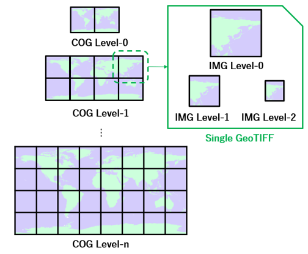

Le GeoTIFF Optimisé pour le Cloud permet un accès rapide et efficace aux données géospatiales directement sur le cloud.
Le COG permet d'accéder uniquement à la portion des données dont vous avez besoin.
Les logiciels cloud utilisent le même fichier sans duplication.
Compatible avec les logiciels SIG traditionnels comme un GeoTIFF normal.
Les pixels de l'image sont organisés efficacement pour un accès via des requêtes HTTP.
